| There is a wealth of information on this page about the energy systems that work within, around and throughout the Human Energy Field. Since Reiki is a healing practice that works specifically with this system, it is important to know what, why and how Reiki addresses your personal issues. I encourage you to take your time in reading the information thoroughly so that you can actively participate in your Reiki sessions. |
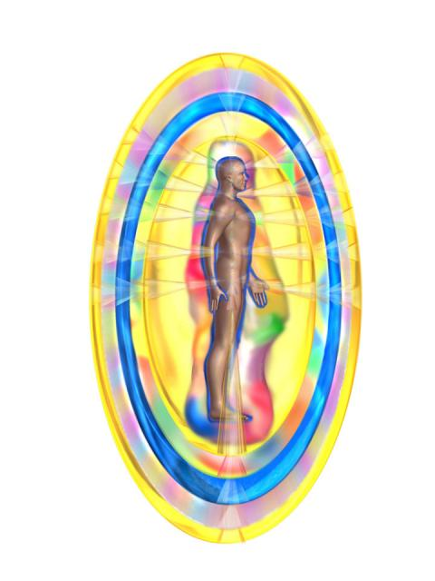
(The illustration to the left shows the interaction between chakras and the aura.)
What is a "chakra"? (prounouced "chuck-ra")
Our bodies appear to be solid, but, in fact, we are 99.99% "empty space" filled with energetic, vibrating atoms, according to quantum physicists. Our entire body vibrates at a basic frequency of approximately 8 cycles per second, which is the same frequency as the basic electromagnetic field of the Earth. We are literally attuned to the Earth.
Chakras are whirling concentrated energy centers. They are measurable patterns of electromagnetic activity for receiving, assimilating, and transmitting life-force energy to and within the body. Chakras receive and transmit energy all the time. Chakras draw in Divine life-force energy (also called “ki”, “chi” or “prana”) from the Universe, and are part of a intelligent energy system that distributes this vital energy to the physical glands and organs in the body, and through the bloodstream and nervous system for optimum health and well being.
Chakras are located deep within the center of the physical body next to hormonal glands along the spinal column.
(Using the phrase, "deep within the the center of the physical body" is not exactly correct; but I am using that phrase for an easy explanation for beginners in the education of the human energy field.)
The illustration below gives us an idea of how the chakras spin to generate universal and environmental energy. The different colors are determined by the speed of rotation (frequency and wavelength) of each energy center. Every color has a frequency of energy that is specific to that particular color. Scroll down for more explanation on Chakras and colors.
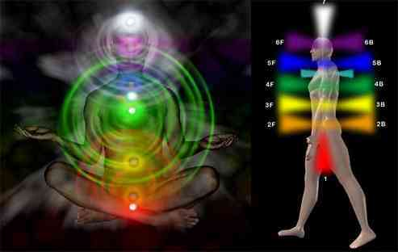
The chakras work directly and interdependantly with energy currents. There are three currents which flow in and around the spinal column, 2 of which look like the spiraling serpents of the caduceus (the familiar symbol used by the American Medical Association). The current on the left is the Ida, the feminine force of passion and emotion. The current on the right is the Pingala, the masculine force of the intellect. Chakras are attached along the spinal current from the base to the top of the head, through the third current known as the Hara, and are held in place by the crossing of the invisible Ida and Pingala. In Chinese culture, the male/female energies are known as Yin/Yang.
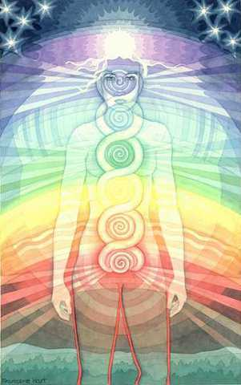
Humans as Electro-Magnetic Energy
There are two primary electrical systems in the physical body. The first is the alternating electrical current of the nervous system and brain, which governs our muscles, hormones, and physical sensations.
The second is a continuous, electromagnetic radiation coming off our atoms which allows for an energy exchange between individuals and their environment. Each person’s unique energy field or aura makes up the person’s physical, mental, emotional, and spiritual states. Scientists in the field of energy medicine agree that this vibrating energy field stores coded information about our past, present, and future health.
The Relationship between Chakras and the Physical Body
Chakras coincide with the body’s endocrine system. Each chakra has an influence over the endocrine glands and the hormones they release, and internal organs in that part of the body where the chakra is located. Sometimes, their influence covers a broader area. In addition to connection with Endrocrine system, the chakras also connect the spinal cord and the autonomic nervous system with our subtle body of vibration energy called the bioelectromagnetic field or aura.
Chakras and their corresponding Glands and Body Parts
NOTE: there is some disagreement in the field of energy work as to the glands associated with chakras 1 & 2. Some feel as though it is visa-versa of what is listed in this table. |
|||||||||||||||||||||||||||||||
Where are the 7 main chakras and what are their related life issues?
Besides their role in maintaining our physical health, chakras also oversee various life issues. Each of the 7 main chakras reflects essential aspects of consciousness and govern our lives, loves, learning, and spiritual awakening. Note also, as listed in the table below, that each chakra and color is associated with a specific note on the musical scale This is because frequencies are perceived as both color and sound, among other things. For this reason tonal sound, tuning forks and color therapies are also rapidly gaining notoriety by *entraining chakras to their proper resonant frequency.
*Entrainment - A physics phenomenon of resonance, first observed in the 17th century, has an effect on all of us. Entrainment is defined as the tendency for two oscillating bodies to lock into phase so that they vibrate in harmony. It is also defined as a synchronization of two or more rhythmic cycles. The principle of entrainment is universal, appearing in chemistry, pharmacology, biology, medicine, psychology, sociology, astronomy, architecture and more. The classic example shows individual pulsing heart muscle cells. When they are brought close together, they begin pulsing in synchrony. Another example of the entrainment effect is women who live in the same household often find that their menstrual cycles will coincide. For information on sound entrainment, click here.
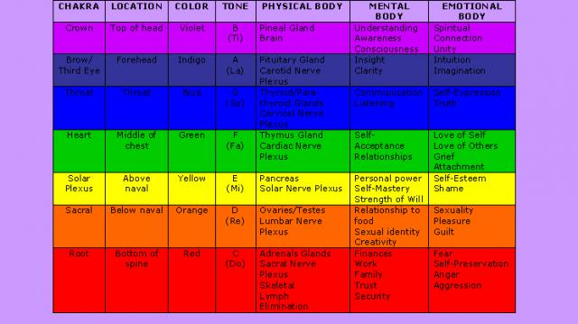
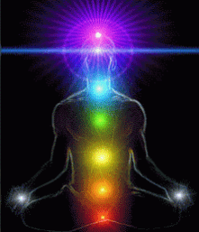
An Energy Communication System.
The chakras are interrelated; all affect each other. The individual chakra centers never act independently; they are all inter-related and interdependant. The energies flow one with the other as they are being processed by the spin of the chakras. For this reason, specific chakra locations will vibrate with a combination of colors because of the constant flow and interaction between all the chakras. The main point in any chakra or energy work is to ensure all the chakras are open and rotating properly. If not, imbalance occurs. The illustration to the right is a wonderful example of this interaction that happens moment by moment, always in fluctuation.
What is important to remember about energy is that all energy is INFORMATION. The chakra centers simply generate and process information encoded within the patterns of various energy fields which we are part of and to which we are exposed. In a sense, chakras spin in order to process the information of energy fields and integrate that information within and around our own fields of energy, affecting our thoughts, emotions, feelings, beliefs, attitudes and physical bodies. It is essentially an energy communication system.
The Root Chakra is the lowest of the 7 chakras and spins the slowest or resonates at the lowest of the 7 vibration frequencies. The Crown Chakra is the highest of the 7 chakras and spins the fastest.
Each chakra is a different color. The colors are in the same color order as a rainbow and range from:
The order of colors has everything to do with the vibrational frequency and wavelegth of each color - which is why rainbows and chakras both have the same order of color. See the charts below:
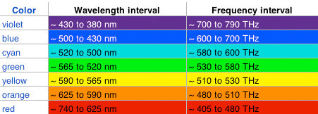
| Figure below: The visible spectrum. X-rays, light, and radio waves are examples of electromagnetic waves. Light is the part of the electromagnetic spectrum that we can detect with our eyes. At the blue end of the visible spectrum, the wavelength of light is shorter (about 400 nm). At the red end of the spectrum, the wavelength of light is longer (about 700 nm) (Illustration from Abrisa Glass & Coatings, 2005). |
This range of wavelengths is called the visible spectrum of light. When you see a rainbow in the sky, or white light that has been refracted through a prism, you are seeing a spectrum of colors. The different colors are related to the different wavelengths of light. Violet light is at the short-wavelength end of the visible spectrum (400 nm), and red light is at the long-wavelength end of the visible spectrum (700 nm), with the rainbow of colors in between.
We perceive different colors because our visual system has evolved to make use of the spectral information in reflected light. When light interacts with an object, the light can be absorbed by the object, reflected by the object, or transmitted by the object.
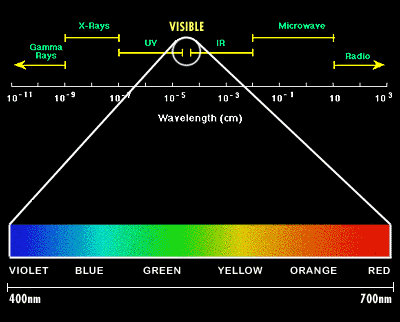
What are energy blockages or energy imbalances in the chakras?
Imbalances in the chakras are known as energy blocks. When there is unreleased emotion such as fear, anger or guilt accumulated from past experiences or when there’s been a lack of nurturing, love, and encouragement during the developmental period, the energy flows less freely to/from the chakras.
Whenever a person blocks an experience, he/she blocks the flow of energy to/from their chakras. The chakras become blocked, clogged with stagnated energy, spin irregularly or backwards or can even become distorted or torn. When the chakras are functioning normally, each one will be open and spinning properly to metabolize the particular energies needed from the universal energy field. There are, however, times when chakras will rotate opposite of the normal spin as the energy "unwinds" and "dumps out" embedded patterns that no longer serve us well.
At these times, it is very important to receive Reiki in order to transform and transmute the patterns being released to higher frequency octaves of energy, and then get the chakra flowing in the normal direction. Every human being goes through cycles every month where the lower chakras will spin backward as a part of cleansing and release, such as during the time of a womans' mensus. Men experience this as well, though not through a physical mensus.
If you were to completely think thoughts of love and faith, your body's energy would flow smoothly between and around the chakras. You would probably feel happy and healthy . Fearful thoughts negatively affect your chakras' ability to function. They cause the chakras to become dirty, shrunken or swollen. That is why you may feel out of sorts or lethargic and not know why. Obsessive thoughts cause the chakras to enlarge and become out of proportion.
The aim of Reiki is to address detrimental patterns of the energy fields, which in turn restores healthy energetic patterns to the organs of the body. Free flow of energy is restored to the chakras and meridian channels, resulting in an improved sense of mental clarity, vitality and optimal wellness. |
Bringing It All Together: The Energy System
Meridians, Chakras, Auras and Patterns
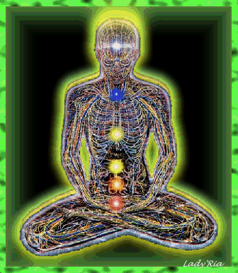
1) The Meridians: In the way an artery transports blood, a meridian transports energy. As the body's energy bloodstream, the meridian system carries the life force, adjusts metabolism, removes blockages, and even determines the speed and form of cellular change. The flow of the meridian energy pathways is as critical as the flow of blood. No energy, no life. Meridians affect every organ and every physiological system, including the immune, nervous, endocrine, circulatory, respiratory, digestive, skeletal, muscular, and lymphatic systems. Each system is fed by at least one meridian. If a meridian's energy is obstructed or unregulated, the system it feeds is jeopardized. The meridians include fourteen tangible channels that carry energy into, through, and out of your body. Your meridian pathways also connect hundreds of tiny, electromagnetically distinct points along the surface of the skin. These are known as acupuncture points. They have less electrical resistance than other areas of the skin, and they can be stimulated with needles or physical pressure to release or redistribute energy along the meridian pathway.
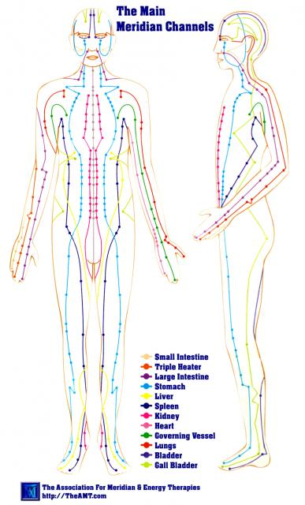
2) The Chakras: Whereas the meridians deliver their energy to the organs, the chakras bathe the organs in their energies. Each chakra supplies energy to specific organs, corresponds to a distinct aspect of your personality, and resonates with one of seven universal principles having to do with survival, creativity, identity, love, expression, comprehension, or transcendence. Your chakra energies encrypt your experiences in much the way your neurons code your memories. An imprint of every emotionally significant event you have experienced is recorded in your chakra energies. A sensitive practitioner's hand held over a chakra may resonate with pain in a related organ, congestion in a lymph node, subtle abnormalities in heat or pulsing, areas of emotional turmoil, or even tune into a stored memory that might be addressed as part of the healing process.
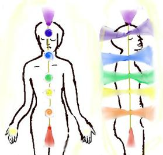
3) The Aura: Your aura (or biofield, the term used by scientists who have been studying it) is a multi-layered shell of energy that emanates from your body and interacts with the energies of your environment. It is itself a protective atmosphere that surrounds you, filtering out many of the energies you encounter and drawing in others that you need. Like a space suit, your aura protects you from harmful energies. Like a radio antenna, on the other hand, it brings in energies with which it resonates. The aura is a conduit, a two-way antenna that brings in energy from the environment to your chakras and that sends energy from your chakras outward. When you feel happy, attractive, and spirited, your aura may fill an entire room. When you are sad, despondent, and somber, your aura crashes in on you, forming an energetic shell that isolates you from the world. Some people’s auras seem to reach out and embrace you. You know such people, and if you could see their auras, you would find that their aura energies do indeed reach toward your own. You also know people whose auras are so tightly bound and protective that they keep you out like an electric fence. A study conducted by Valerie Hunt, a neurophysiologist at UCLA's Energy Fields Laboratory, correlated "aura readings" with physiological measures. The auras seen by eight practitioners not only corresponded with one another, they correlated with wave patterns picked up by electrodes on the skin at the spot that was being observed.
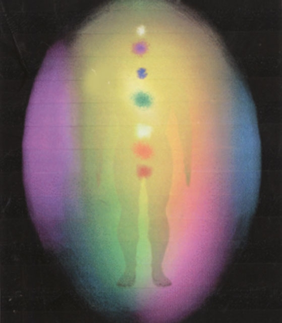
4) Patterns: The body’s energies spin, spiral, curve, twist, crisscross, and weave themselves into patterns of magnificent beauty. The equilibrium of this kaleidoscope of colors and shapes is maintained by an energy system known by different names to energy healers throughout the world. In the East, it has been called the "Tibetan energy ring." In yoga tradition, it is represented by two curved lines that cross seven times, symbolically encasing the seven chakras. In the West, it is seen in the caduceus, the intertwined serpents on a staff—also crossing seven times—associated initially with the Greek god Hermes, messenger for the gods, and later used as a symbol in alchemy and then medicine. Like invisible threads that keep all the energy systems functioning as a single unit, patterns network throughout and around our energy and body. These patterns also become embedded in fields of thoughts, emotions, feelings, beliefs and attitudes, as well as physcial, biological patterns (my emphasis), see "Mental and Emotional Health". It is a living system, continually weaving new cross-overs, ever expanding and contracting. The double helix of DNA is this pattern in microcosm. The left hemisphere’s control of the right side of the body and the right hemisphere’s control of the left side is this pattern writ large. These crisscrossing energies permeating your body are the "connective tissue" of your energy system. See illustration below for measurement of energy patterns.
(The above information is partial information from a free handbook by Donna Eden at: http://www.energymed.org/hbank/default.htm)
Measurement of Bioenergy Fields
Dr.
Valerie Hunt is Emeritus Professor in the UCLA Department of Physiological
Sciences. For 40 years she has been a physiology researcher and university
professor. She was the first to discover through research the relationship
between changes in bioenergy fields and human behavior and experience.
In mapping the bioenergy fields, Dr. Valerie Hunt has found that each individual has a unique resting pattern. She calls this the Signature Field.
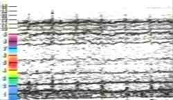
The Signature Field of a healthy human being is composed of balanced, coherent energy patterns across the full spectrum of frequencies. This coherency shows up on a graph as smooth, gentle, shallow waves evenly distributed throughout the frequency spectrum.
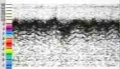
The Signature Fields of human beings who have (or are soon going to develop) disease are of two kinds: deficiency patterns, and hyperactive patterns. These show up on the graph as thick, jagged waves concentrated in the high- or low-frequency bands. Deficiency diseases like cancer and fatigue syndrome have anticoherent patterns in the high frequency ranges, with almost no energy at all in the lower frequencies. Hyperactive conditions like colitis, hypertension, and skin problems show anticoherent patterns in the low frequencies, with absent vibrations in the high frequencies.
Dr. Hunt says that the type of disease — deficiency versus hyperactive — can be determined by AuraMeter readings (still in research stage, not available for the public, my emphasis), but not what tissues the disease will attack. "That is determined by genetic weakness and other factors that are at this time unreadable by the AuraMeter. But we can tell what kind of diseases will occur, for they fall into those two categories: areas where there is too much chi, or energy, and areas where energy or chi is lacking. The pattern of frequencies tells us this."
"Until now," Dr. Hunt says, "many human diseases have been characterized as 'etiology unknown.' In other words, the cause of the disease could not be determined, and therefore the only possible treatment was alleviation of symptoms. But physiological symptoms appear because of the field disturbance. If we correct the disturbance in the field, the symptoms disappear and we have been healed. If we treat the symptoms directly, then when a stressful situation once more aggravates the incoherent energy that is the source of the problem, the disease condition returns."
There
are, says Dr. Hunt, five variables in a successful healing: (1) the field of the
disease, (2) the field of the person, (3) the field of the therapist, (4) the
field of the therapy, and (5) the combined field of the therapist with the
therapy being performed.
"When the energy of the therapist performing a particular therapy moves and
changes the anticoherent energy field, that disease will be healed." Dr. Hunt
says. "But it has to be both the therapist and the therapy that creates this
field. And the energy of the healer combined with the energy of the therapy has
to transact with the person being healed in order for results to occur.
You can read her biogoraphy and more fully about these facts in her article "Healing with Electro Magnetic Energy" at her bioenergyfields.org website.
Dr. Valerie Hunts books, Naibhu: A Spiritual Odyssey, Mind Mastery Meditations, and Infinite Mind: The Science of Human Vibrations of Consciousness, may be found atMalibu Publishing.
Source: http://reikiservices.cfsites.org/custom.php?pageid=24619